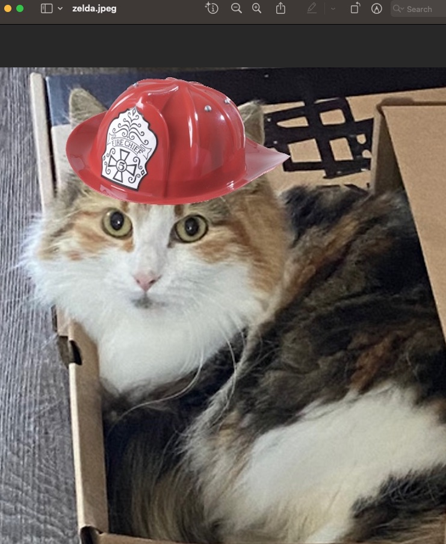

Paw-sperity Plan: How Sending Your Pets to Work Can Tackle the Cost of Living Crisis!
In the midst of a relentless cost of living crisis, desperate times call for desperate measures. Forget about trimming your budget or finding a higher-paying job; the real solution lies in the untapped potential of your furry companions. Yes, you heard it right – it's time to send your pets out into the workforce to help alleviate the financial burden. Imagine your cat negotiating lucrative business deals or your dog attending corporate meetings with a wagging tail – the possibilities are endless.
Picture this: Fido, the charismatic Labrador, is now the CEO of a multinational biscuit company. His motivational speeches consist of enthusiastic barks, and productivity soars as employees eagerly await their daily belly rubs. Meanwhile, Fluffy, the aloof Persian cat, has become a renowned therapist specializing in stress reduction through purring. Forget about expensive human therapists; Fluffy's hourly rates are a mere scratching post away. Who needs a 401(k) when your pets are building their retirement nest eggs by working overtime at the local pet-friendly office? In this brave new world, the cost of living crisis becomes nothing more than a distant memory as your pets rise to the occasion, proving that they're not just good for cuddles – they're also financial wizards in fur coats.